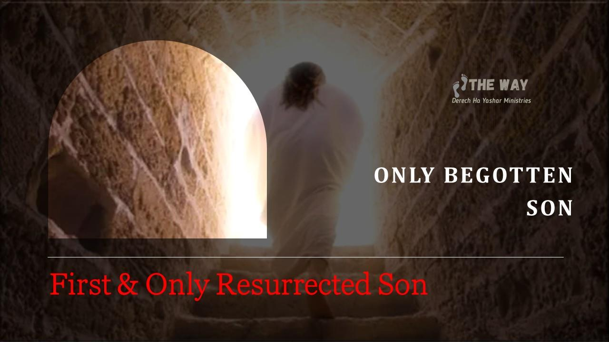

Definition of begotten
begotten adjective: brought into existence by or as if by a parent. Merriam Webster Dictionary
Another Dictionary - Something created something else or someone fathered a child.
The Christian Church teaches that ‘Jesus’ was the only begotten son on Earth through a divine conception to ‘Mary’. This is not the birth indicated by the word begotten; the term begotten is not referring to Yahushua’s human birth to Yoseph and Maryam; but rather his birth into full sonship to יהוה. It is referring to Yahushua’s resurrection into The Kingdom of יהוה. Whenever speaking of his human birth in the flesh the word born is used not begotten.
The term "only begotten son" simply means Yahushua at this time and until such time as the first resurrection is the ONLY begotten (resurrected) son of יהוה in the family. Yahushua was the FIRST FRUITS (resurrected the first fruits of many more to come on the first Shabbat after Passover then his presenting the first fruits of the resurrection to the Father the next day on the Feast of First Fruits).
Qorintiyim Aleph/1 Corinthians 1520But now the Messiah has been risen (by יהוה) from the dead, and has become (the firstborn son upon resurrection not birth to
Maryam/Yoseph) the first fruits of those who have fallen asleep. 21 For since by man (Adam) came death (The Law of Sin and Death), by Man (Yahushua the Second Adam) also came the resurrection of the dead (The Law of Sin and Death has been defeated). 22 For as in Adam all die (being held to account for the decrees in The Law), even so (those who abide) in The Covenant with Yahushua shall all be made alive (begotten by יהוה as sons through resurrection). 23 But each one (of the sons of יהוה) in his own order (after Yahushua, the eldest son): The Messiah the first fruits (first and only at this point of the sons to be resurrected), afterward those who are in covenant with יהוה through Yahushua at Yahushua’s coming (First Resurrection when the rest of the sons will be begotten).
The term begotten is the key. “Begotten of יהוה” means resurrected birth not human birth. It is specifically talking about ONLY RESURRECTED SON until he returns to resurrect the rest of the family of יהוה.
Ma’asei/Acts 13:3332And we declare to you glad tidings—that promise (that we are Elohim, sons of the Most High Tehillim/Psalm 82:6) which was made (by יהוה) to the (fore) fathers (we are saved by faith in the promises of יהוה made to our forefathers). 33 יהוה has fulfilled this (promise of eternal life as literal Elohim, sons of יהוה) for us their children (children of Avraham/Yitschaq/Ya’aqov only), in that יהוה has raised up Yahushua (the promise of eternal life fulfilled). As it is also written in the second Psalm: "You are My Son, Today (day Yahushua was resurrected) I have begotten You."
Romiyim/Romans 1:3-4 NKJV3 concerning His Son Yahushua the Messiah our King, who was born of the seed of David (both Maryam Yoseph) according to the flesh (was a human), 4and declared to be the Son of יהוה with power according to the Spirit of set-apartness, by the resurrection from the dead.
Yahushua is not the only son, just the only begotten from the grave at this point. Adam and David, and indeed all of us are declared sons of יהוה. We too, shall be sons of יהוה, begotten by the same power of the Spirit of Set-apartness upon resurrection just like Yahushua, brothers to the first born:
Luqas 20:3636 for they cannot even die anymore, because they are like angels, and are sons of יהוה, being sons of the resurrection.
The distinction between Yahushua and the rest of the sons of יהוה is that Yahushua is the eldest and heir to all things as the firstborn of the resurrection through inheritance. We too will follow Yahushua and be begotten as sons of יהוה through resurrection. We will take our place as Priests, Judges, and Kings under the authority of the first born and King of Kings and High Priest...
Mattithyahu/Matthew 19:28-2928Yahushua said to them, "Most assuredly I tell you, that you who have followed me, in the "Regeneration" (Resurrection) when (after resurrection) the Son of Man will sit on the throne of his glory, you also will sit on twelve thrones, judging the twelve tribes of Yisra’el.
Hazon/Revelation 5:1010And hast made us unto our Elohim ( יהוה) kings and priests: and we shall reign on the earth.
Romiyim/Romans 8:19“creation eagerly awaits the revelation of the sons of יהוה”… vs. 21“when creation will be set free from slavery and come into the glorious freedom of the sons of יהוה”
Hazon/Revelation 21:77 He that overcomes (death through resurrection) shall inherit all things; and I will be his Elohim, and he shall be my son.
We see that all the promises given to Yahushua are also given to us. We too sit on thrones, we too inherit “all things”, we too are sons of יהוה. Yahushua is the first born son through resurrection, the first fruits presented to יהוה through ascension, and currently the only resurrected human (only begotten son). Notice it is all about a family and inheritance.
Qolasim/Colossians 1:
13 Who (יהוה) has delivered us from the power of darkness, and has transposed us into the kingdom of His dear (firstborn) Son (Yahushua): 14 In whom (Yahushua) we have redemption (to יהוה) through his (Yahushua’s) blood (that consummated the marriage covenant, we become ‘one with יהוה’ as Yahushua was Yochanan/ John 17:21), even the forgiveness of sins (the decrees in The Law for transgressing יהוה’s commands are covered by the blood of the lamb): 15 Who (Yahushua) is the (perfect human) image of the invisible Elohim (the proxy of יהוה), the firstborn (Feast of First Fruits) of every (eternal) creature.
Sha’ul changes the subject to distinguish יהוה as the Creator
16 For by Him (יהוה) were all things created, that are in heaven, and that are in earth, visible (flesh) and invisible (spirit), whether they be thrones, or dominions, or principalities, or powers: all things were created by Him (alone Yeshayahu/Isaiah 44:24), and for him (for Yahushua as an inheritance): 17 And He (the Creator יהוה) is before all things (self existing), and by Him (יהוה) all things consist.
Sha’ul changes the subject back to Yahushua to distinguish Yahushua as the first born son of יהוה
18 And he (Yahushua) is the head of the body (the Temple of יהוה), the assembly (family of יהוה): who (Yahushua) is the beginning (of that family), the firstborn from the dead (Yahushua was the first to complete the process of training on Earth and be given Eternal Life by יהוה); that in all things (of יהוה’s) he (Yahushua) might have the pre-eminence (among the sons of יהוה). 19 For it pleased the Father (of all the sons) that in him (Yahushua) should all fullness (of deity) dwell (that same fullness dwells in us too Eph. 3:9); 20 And (Yahushua by defeating The Law of Sin and Death), having made peace (between the two houses, Remnant Yisra’el) through the blood of his stake (by covering the death decrees freeing us from the fear of death that held us captive), by him (offering his life as a sacrifice to יהוה) to reconcile all things (יהוה created) unto Himself; by (sacrificing) him (self, as the Passover Lamb), I say, whether they be things in earth, or things in heaven.
Ephesiyim/Ephesians 11Sha’ul, an apostle of Messiah Yahushua by the will of יהוה, to the assembly of sons which are at Ephesus, and to the faithful in (covenant with) Messiah Yahushua: 2Grace be to you, and peace, from יהוה our Father, and from the King Messiah Yahushua. 3Blessed be the Elohim (declaration of the Shema) and Father of our King Messiah Yahushua (his is not Elohim incarnate), who (יהוה) have blessed us (his sons) with all spiritual blessings in The Kingdom of יהוה in (covenant with) Yahushua: 4According (to יהוה’s purpose) as He (יהוה) has chosen (predestined) us in Him (self) before the foundation of the world (through His Plan of Salvation), that we should be set-apart and without blame before Him (יהוה ) in love (through covenant): 5Having predesignated (according to His Plan of Salvation) us unto the adoption of children (יהוה’s plan to beget a family) by (the blood sacrifice of) Messiah Yahushua (as Passover Lamb) to himself (one through marriage covenant), according to the good pleasure of His (יהוה’s) will (to beget a family of Elohim to govern His creation), 6To the praise of the glory of His (יהוה’s) grace, wherein He has (through blood sacrifice of Messiah) made us accepted in the beloved (family of יהוה).
7In whom (through covenant with Messiah Yahushua) we have redemption (from the second death, The Passover) through his blood (the Passover Lamb), the forgiveness of sins (decrees covered for transgression of Law), according to the riches of His (יהוה’s) grace; 8Wherein (covenant with Yahushua) He (יהוה) has abounded toward us (unlimited Grace by accepting Yahushua’s sacrifice to cover the death decrees in The Law) in all wisdom and prudence;
9Having made known unto us the mystery of His will (to beget a family), according to His (יהוה’s) good pleasure which He (יהוה) has purposed (predestined to create) in Himself (as the Father): 10That in the dispensation of the fullness of times (as foretold by His prophets) He (יהוה) might gather together in one
(through the covenant of marriage, the two shall become one) all things in (covenant with the) Messiah, both which are in heaven, and which are on earth; even in Him(self, יהוה will reconcile creation through the sacrifice of His Son):
11 In whom (the first born Son, Messiah Yahushua) also we (too) have obtained an inheritance (as sons of יהוה, we inherit the Universe), being predesignated according to the purpose of יהוה (to govern creation through a family of Elohim) who works all things after the counsel of his (יהוה’s) own will: 12 That we (sons of יהוה) should be the praise of His (יהוה’s) glory, who first trusted in Yahushua the Messiah. 13 In whom (Yahushua) you also trusted (was the Messiah), after that you heard the word of truth (that we too are sons of יהוה), the gospel of your salvation (purchased through the blood sacrifice of Yahushua to consummate the covenant of marriage whereby we are ONE with יהוה): in whom (covenant with Yahushua) also after that you believed, that you were sealed (on your forehead with The Shema) with that Ruach Ha Qodesh of promise, 14 Which is the earnest (guarantee) of our (future) inheritance (as sons of יהוה) until the redemption (transposition to The Kingdom of יהוה ) of the purchased possession (when we’ll be begotten Elohim, sons of יהוה like Yahushua was upon resurrection), unto the praise of his glory.
17 I keep asking that the Elohim of our King the Messiah Yahushua (יהוה is the Elohim and Father of Yahushua in the exact same way He is our Elohim and Father Yochanan 20:17), the glorious Father, may give you the Spirit of wisdom (that incarnation is a lie) and revelation (that Yahushua was no different than you and I), so that you may know Him (your Father) better (by not worshipping Jesus as Elohim). 18 I pray that the eyes of your heart may be enlightened in order that you may know the hope to which He (your Father) has called you (as His son), the riches of His (your Father’s) glorious inheritance in His (יהוה’s) set-apart people, 19 and His (יהוה’s) incomparably great power for us who believe. That power is the same (no difference between Yahushua and the rest of the sons, Yahushua is not Elohim incarnate) as the mighty strength 20 He (your Father יהוה) exerted when He (the Father) raised Yahushua (His first born son) from the dead and seated Yahushua at His (Father’s) right hand (they are not the same being) in The Kingdom of יהוה , 21 far above all rule and authority, power and dominion, and every name that is invoked, not only in the present age but also in the one to come. 22 And יהוה (the Father) placed all things under his (son Yahushua’s) feet and appointed him (he had to earn it) to be head over everything for sons of יהוה, 23 which is His (יהוה’s) body (Temple), the fullness of Him (יהוה) who fills everything in every way.
There really isn’t much I can add to that. Sha’ul did an outstanding job of explaining exactly what יהוה set out to do and where Yahushua fits in and where, we the rest of His sons, are destined within the Plan of יהוה. Yahushua was not a “god-man” and not the incarnation of יהוה, that is a pagan concept born in Babylon and the fundamental doctrine of all pagan religions.
Yahushua is the first human to complete the process of perfection and the first human to be resurrected from the grave as a full son of יהוה. He is the only begotten son of the resurrection at this point. But, he will not always be the only begotten son. There are many more to follow.